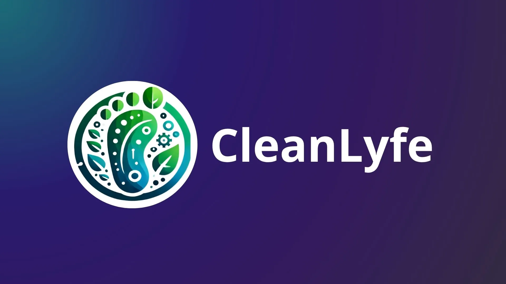

{%extends 'layouts/base_wm.html' %}
{% block title %} WorldMatters {% endblock %}

{%block main%}
<div>
<div class="relative w-full h-screen">
  
</div>

<div id="default-carousel" class="relative w-3xl top-56 m-auto rounded-br-4xl" data-carousel="slide">
    <!-- Carousel wrapper -->
    <div class="relative h-56 overflow-hidden rounded-lg md:h-96">
         <!-- CleanLyfe -->
        <div class="hidden duration-700 ease-in-out" data-carousel-item>
            
        </div>
        <!-- WaterFlow -->
        <div class="hidden duration-700 ease-in-out" data-carousel-item>
            
        </div>
    </div>
    <!-- Slider indicators -->
    <div class="absolute z-30 flex -translate-x-1/2 bottom-5 left-1/2 space-x-3 rtl:space-x-reverse">
        <button type="button" class="w-3 h-3 rounded-full bg-green-400 " aria-current="true" aria-label="Slide 1" data-carousel-slide-to="0"></button>
        <button type="button" class="w-3 h-3 rounded-full bg-green-400 " aria-current="false" aria-label="Slide 2" data-carousel-slide-to="1"></button>
    </div>
    <!-- Slider controls -->
    <button type="button" class="absolute top-0 start-0 z-30 flex items-center justify-center h-full px-4 cursor-pointer group focus:outline-none" data-carousel-prev>
        <span class="inline-flex items-center justify-center w-10 h-10 rounded-full bg-green-500 dark:bg-green-500 group-hover:bg-green-600 dark:group-hover:bg-green-600 group-focus:ring-4 group-focus:ring-white dark:group-focus:ring-white group-focus:outline-none">
            <svg class="w-4 h-4 text-white dark:text-white rtl:rotate-180" aria-hidden="true" xmlns="http://www.w3.org/2000/svg" fill="none" viewBox="0 0 6 10">
                <path stroke="currentColor" stroke-linecap="round" stroke-linejoin="round" stroke-width="2" d="M5 1 1 5l4 4"/>
            </svg>
            <span class="sr-only">Previous</span>
        </span>
    </button>
    <button type="button" class="absolute top-0 end-0 z-30 flex items-center justify-center h-full px-4 cursor-pointer group focus:outline-none" data-carousel-next>
        <span class="inline-flex items-center justify-center w-10 h-10 rounded-full bg-green-500 dark:bg-green-500 group-hover:bg-green-600 dark:group-hover:bg-green-600 group-focus:ring-4 group-focus:ring-white dark:group-focus:ring-white group-focus:outline-none">
            <svg class="w-4 h-4 text-white dark:text-white rtl:rotate-180" aria-hidden="true" xmlns="http://www.w3.org/2000/svg" fill="none" viewBox="0 0 6 10">
                <path stroke="currentColor" stroke-linecap="round" stroke-linejoin="round" stroke-width="2" d="m1 9 4-4-4-4"/>
            </svg>
            <span class="sr-only">Next</span>
        </span>
    </button>
</div>
</div>
{%endblock%}